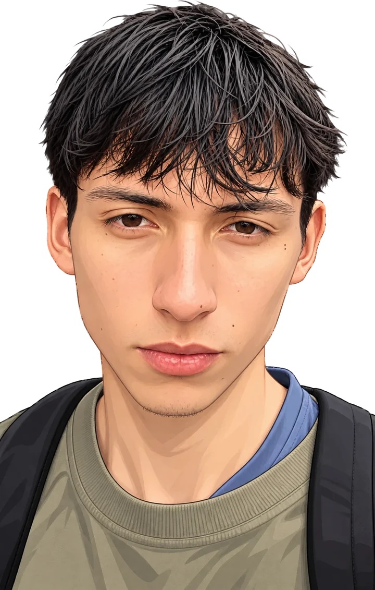

My English Journey
Posts
About me
CEFR B1.1+
hello.txt
Learning English,
one post
at a time.
Read the posts
About me
0
posts
0
evidences ready
0
new words

The posts.
Open them like files on my Mac.
Posts
About me.
Say hi in English.
Messages
Write to me
Copy
‹ All posts